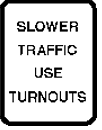

Wise Lab · 加州駕駛手冊Wise Lab · California Driver's Handbook
Passing超車規則 · v1rules · v1
把手冊裡的超車內容寫成形式化規則：一套小而固定、讀起來仍像英文的規則語言，每條都連回它來自的原句。The handbook’s passing content as formal rules, in a small rule language that still reads like English. Every rule links back to the sentence it came from.
來源Source: California Driver's Handbook·版本Edition: DL 600 (Rev. 6/2025); web pages retrieved 2026-10-20·離線副本Offline copy: 2026-10-20 (handbooks/ca/)·單位Units: US customary (ft, mi, mph)US customary (ft, mi, mph)
68 條敘述，來自 92 段原文68 statements from 92 passages
14 條法規14 legal rules
44 條建議44 advice rules
58 處模糊用字58 vague spots flagged
法規LawMUSTMUST NOTMAY
建議AdviceSHOULDSHOULD NOT
定義與事實Definitions and facts
例外Exceptions
模糊用字Vague wording
敘述類型Statement types
RULE
58
PROCEDURE
1
EXCEPTION
1
DEFINE
4
FACT
4
效力Force
法規Legal
14
建議Advisory
45
無（定義、事實、例外）None (definitions, facts, exceptions)
9
模糊用字Vague wording
J判斷詞Judgment term
32
R指涉不明Unclear reference
3
G目標與手段不一致Goal vs means
1
D隱含預設Implicit default
3
M法律效力不明Unclear legal force
8
V用詞不一致Wording drift
5
X跨頁重複Repeated elsewhere
6
出處Sources
手冊段落Handbook passages
105
被引用的段落Passages cited
92
出處連結Source links
125
引用的圖Pictures cited
7
未納入Left out
13
規則語言 v1Rule language v1
規則怎麼寫How a rule is written
每條敘述都套用固定模板：大寫關鍵字負責邏輯，中間的一般英文負責內容。Each statement fills a fixed template: keywords in capitals carry the logic, plain English between them carries the content.
讀起來就是英文Reads as English每條敘述念出來都是一句英文。Read aloud, every statement is an English sentence.
關鍵字少而固定A small, fixed keyword set同一個關鍵字在哪裡出現，意思都一樣。Each keyword means the same thing wherever it appears.
不比手冊多說No more than the handbook效力只來自原文用語；模糊用字照留並標記。Force comes from its wording; vague words are kept and flagged.
可以追溯Traceable每條敘述都保留它來自的原句。Every statement keeps the sentences it came from.
規則語言 · 01Rule language · 01
一條規則的結構Anatomy of a rule
一段手冊原文，和由它寫成的規則，逐部分標示。One handbook passage and the rule written from it, part by part.
手冊原文Handbook
When passing a cyclist, drivers of motor vehicles must maintain a minimum distance of one metre, where practical between their vehicle and the cyclist. (See Diagram 2-11.) Failure to do so may result in a fine and an additional two demerit points on the driver’s record.
規則Rule
a driver of a motor vehicleMUSTkeep at least 1 m between the vehicle and a cyclist
WHILE passing the cyclist,where practicalJ
IF VIOLATED a fine AND 2 demerit points
角色Role
a driver of a motor vehicle受約束的人，在原文允許下越具體越好。先用 “a”，之後用 “the”，不用 “you”。Who is bound, as specific as the source allows. “a” first, then “the”; never “you”.
情態詞Modal
MUST約束力：MUSTMUST NOTMAY 是法規，SHOULDSHOULD NOT 是建議。這裡原文是 “must maintain”。How binding: MUSTMUST NOTMAY are law, SHOULDSHOULD NOT advice. Here the handbook says “must maintain”.
動作Action
keep at least 1 m between the vehicle and a cyclist要做什麼，用固定的一般英文：“a minimum distance of one metre” 寫成 “at least 1 m”。What to do, in fixed plain English: “a minimum distance of one metre” becomes “at least 1 m”.
子句Clause
WHILE passing the cyclist何時適用。每個子句以關鍵字開頭，自成一行。When it applies. Each clause starts its own line with a keyword.
模糊用字Vague words
where practical照原文保留並標記（J，判斷詞）；規則不替它決定意思。Kept as written and flagged (J, a judgment term); the rule does not decide what it means.
處罰Penalty
IF VIOLATED a fine AND 2 demerit points取自同一段：“an additional two demerit points” 寫成 “2 demerit points”。From the same paragraph: “an additional two demerit points” becomes “2 demerit points”.
跟著規則保存Kept with the ruleID3.4.4bFORCE FROM原文用語 · “must maintain”Wording · “must maintain”SOURCESharing the road › Cyclists · ¶3SEEDiagram 2-11FLAGSJ where practical
規則語言 · 02Rule language · 02
敘述類型Statement types
五種敘述，各有固定模板。… 填一般英文，… 可省略。Five kinds of statement, each with a fixed template. … is plain English; … is optional.
種類Kind模板Template例子Example
RULE義務、禁止、許可、建議或提醒。An obligation, prohibition, permission, advice or caution.
角色情態詞動作子句rolemodalactionclauses
a driver MUST NOT pass a vehicle WHEN the driver is within 30 m of a pedestrian crossover 3.1.1a
DEFINE一個詞的意思：屬於哪一類、和同類有何不同。What a term means: its kind, and what sets it apart.
大寫是關鍵字 · 綠色名稱在此定義 · 灰色名稱填一般英文（其中也可用 ANDORNOT 連接片語）· { } 可重複 · [ ] 可省略 · | 表示「或」CAPITALS are keywords · green names are defined here · grey names are plain English (where ANDORNOT may also join phrases) · { } repeats · [ ] is optional · | means or
情態詞Modals
MUST法規Law義務obligation
MUST NOT法規Law禁止prohibition
MAY法規Law許可permission
SHOULD建議Advice建議做advice to do
SHOULD NOT建議Advice建議不做advice against
SHOULDWATCH FOR建議Advice提醒，後接危險a caution, then the hazard
子句（依此順序）Clauses, in this order
WHEN適用的情境或事件the situation or event in which it applies
WHILE整個動作期間成立的狀態a state that lasts through the action
ONLY IF必須成立的條件，多接在 MAY 後a condition that must hold, mostly after MAY
UNLESS同一條敘述裡的例外an exception inside the statement
UNTIL義務何時結束（v1 新增）when a duty ends (new in v1)
BECAUSE理由或目的，不是條件a reason or purpose; never a condition
IF VIOLATED處罰the penalty
ANDORNOTAND 比 OR 優先；括號分組AND binds tighter than OR; ( ) groups
連結Links
EXCEPTION TO編號EXCEPTION TOid修改另一條敘述；較具體的優先changes another statement; the more specific wins
SPECIALIZES編號SPECIALIZESid較窄情境的變體a variant for a narrower situation
ALSO CALLED別名ALSO CALLEDaliasDEFINE 裡的同義詞a synonym inside DEFINE
每條敘述附帶Kept with each statement
ID段落編號加字母section number plus a letter
SOURCE手冊原句，逐字the handbook sentences, word for word
FORCE FROM效力依據：用語、預設或段落why law or advice: wording, default or section
SEE搭配的圖a figure that goes with it
FLAGS模糊用字，依類別vague wording, by kind
TAGS情境維度；已定義，尚未填situation dimensions; defined, not yet filled
規則語言 · 04Rule language · 04
情態詞怎麼選Choosing the modal
法律效力只來自手冊用語。由上往下取第一個符合的；FORCE FROM 記下是哪一條。Legal force comes only from the handbook’s wording. Take the first line that applies; FORCE FROM records which.
手冊用的是When the handbook uses情態詞Modal例子Example
1
法律用語Legal wordingmust、required、not permitted、not allowed、illegal、prohibited、offence、by lawmust, required, not permitted, not allowed, illegal, prohibited, offence, by law
MUSTMUST NOT
Passing within 30 metres of a pedestrian crossover is not permitted.→3.1.1a
2
許可用語Permission wordingmay、can、allowed、permitted，用來給予許可時may, can, allowed, permitted, when they grant permission
MAY
You may drive on the right shoulder only to pass a vehicle turning left …→3.2.4a
3
所在段落Section context段落說明必須遵守，或違規表列出此行為the section says it must be obeyed, or an offence table lists the act
MUSTMUST NOT
Do not pass on this road.→3.1.7a位於禁制標誌一節：“… must be obeyed”in Regulatory signs: “… must be obeyed”
4
建議用語Advice wordingshould、it is important to、try to、avoidshould, it is important to, try to, avoid
SHOULDSHOULD NOT
Avoid passing, changing lanes and crossing traffic.→3.3.2a
5
祈使句Bare imperativedo、don’t、never、always、be suredo, don’t, never, always, be sure
SHOULDSHOULD NOT
Never overtake and pass another vehicle unless you are sure …→2.1b
6
提醒Cautionwatch for、look out for、be prepared，且點出危險watch for, look out for, be prepared, when a hazard is named
SHOULDWATCH FOR
… watch carefully for people suddenly opening doors …→3.4.1a
M
用語和預設不一致時，維持預設並加 M 標記，不靠猜測提高效力。“Don’t pass moving snow plows under any conditions” 沒有法律用語，所以維持 SHOULD NOT 並標 M。Wording and default disagree? Keep the default and add an M flag; force is never raised by guessing. “Don’t pass moving snow plows under any conditions” has no legal word, so it stays SHOULD NOT with M.3.4.9a
超車規則：19 條法規、52 條建議、7 個 M 標記。In the passing rules: 19 law, 52 advice, 7 M flags.
規則語言 · 05Rule language · 05
用詞規範Wording
關鍵字之間的英文也有固定規範，同一件事永遠只有一種說法。The English between the keywords follows fixed rules, so one thing is always said one way.
角色Roles
先用 “a …”，再用 “the …”，不用 “you”。用原文撐得起的最具體角色。“a …” first, then “the …”; never “you”. Use the most specific role the source supports.
And do not speed up when another driver is trying to pass you.→a driver being passed MUST NOT speed up3.6.1b
一個概念一種說法One phrase per concept
規則永遠只用一種說法；手冊用詞不一致處標 V。The rules always use one phrase; where the handbook drifts, a V flag.
overtake→passthe vehicle you are passing→the vehicle being passedyour original lane→the original lanethe right lane→the right-hand lanethe far left lane→the far-left lanerear view mirror→the inside mirror
數量Numbers
用數字與簡短單位；比較只用 at least、at most、more than、less than、within … of。Digits and short units; compare only with at least, at most, more than, less than, within … of.
… must maintain a minimum distance of one metre …→keep at least 1 m3.4.4b
模糊用字Vague words
照原文保留，標成 [?…] 並標記；不發明門檻。Kept as written, marked [?…] and flagged; no threshold is invented.
… you have enough space and time to complete the move safely.→enoughJ space and time to complete it safelyJ2.1a
先後與結束Order and ending
會結束的義務用 UNTIL。「X 之前」寫成 WHEN about to X，「X 之後」寫成 WHEN the driver has X-ed；程序靠步驟順序。A duty that ends uses UNTIL. “Before X” is WHEN about to X, “after X” is WHEN the driver has X-ed; a procedure uses step order.
Wait for the smaller vehicle to move right before you pass.→UNTIL it has moved to the right3.4.3a
目的Purpose
“so that …”、“leaving …” 寫成 BECAUSE this …；理由不限制規則何時適用。“So that …” and “leaving …” become BECAUSE this …; a reason never limits when a rule applies.
… leaving the other lanes clear for passing.→BECAUSE this leaves the other lanes clear for passing3.2.2c
事件Events
規則裡的 “if” 是事件，寫成 WHEN；IF … THEN 只用在程序分支。An “if” in a rule is an event, written WHEN; IF … THEN only branches a procedure.
If a large bus or truck passes you …→WHEN a passing bus or truck pushes the trailer out of position3.5.2c
清單Lists
清單引言（“Bring the following:”）把角色、情態詞與子句傳給每一項，每項各成一條。以清單下定義：DEFINE詞IS類別THAT includes a, b or c。A list lead (“Bring the following:”) gives its role, modal and clauses to every item, and each item is its own statement. A definition by list: DEFINEtermISkindTHAT includes a, b or c.
拆分Splitting
一段裡有好幾件事就拆開，每條都保留同一出處。A passage that holds several statements is split; every piece keeps the same source.
拖車那一段拆成一條 FACT 和兩條規則：The towing paragraph becomes a FACT and two rules:3.5.1a3.5.1b3.5.1c
規則語言 · 06Rule language · 06
模糊用字與標記Vague words and flags
手冊沒說清楚的，規則也不補。四種標記標在字上，四種標在整條敘述上；數字是超車規則裡的個數。What the handbook leaves open stays open. Four flags mark words, four mark a whole statement; the count is for the passing rules.
標在字上On the words
J判斷詞Judgment term需要判斷的字：safe、enough、sure。A word that needs judgment: safe, enough, sure.enoughJ2.1a40
S範圍含糊Hedged scope對範圍打折扣：usually、often、many。A hedge on scope: usually, often, many.usuallyS1d4
R指涉不明Unclear reference指涉或角色不清楚。An unclear reference or role.smaller vehicleR3.4.3a7
G目標與手段不一致Goal vs means限制的是手段，不是目標。Limits a means, not the goal.on the left of a centrelineG3.1.2a2
標在整條敘述On the whole statement
M法律效力不明Unclear legal force用語和預設對效力看法不一。Wording and default disagree on force.“under any conditions”“under any conditions”3.4.9a7
D隱含預設Implicit default預設了沒寫出來的規則。Presupposes an unstated rule.MAY 開路肩，表示平常不行MAY use the shoulder, so normally not3.2.4a3
V用詞不一致Wording drift手冊對同一件事用兩種說法。The handbook names one thing two ways.inside / rear view mirrorinside / rear view mirror2.2a3
X跨頁重複Repeated elsewhere在別處重複，有時說法不同。Stated again elsewhere, sometimes differently.校車停車，結束條件不同school bus stop, ended differently3.4.12d6
左邊是手冊原文（從全書選出的 105 段），右邊是規則；每條線把原文連到它寫成的規則，滑鼠移到任一邊會標出兩端，點一下就跳到另一端。手冊的圖放在用到它的規則底下。Left: the handbook text (105 passages selected from the whole handbook). Right: the rules. Each line joins a passage to its rules; hover either side to light up both ends, click to jump to the other end. The handbook’s pictures sit under the rules that use them.
每條規則附上原句、效力來源與標記；手冊的圖放在用到它的規則底下。Each rule with its source sentence, legal force and flags; the handbook’s pictures sit under the rules that use them.
法規LawMUSTMUST NOTMAY
建議AdviceSHOULDSHOULD NOT
定義與事實Definitions and facts
例外Exceptions
模糊用字Vague wording
手冊原文Handbook text
Section 6: Navigating the RoadsSection 6: Navigating the Roads
手冊放 Passing 章節的那一頁。The page that holds the handbook’s Passing section.
A single solid yellow line marks the center of a road with two-way traffic. Do not pass a vehicle in front of you if there is only one lane of traffic going your direction and a solid yellow line on your side of the road.
Double solid white lines indicate a lane barrier between a regular use and a preferential use lane, such as a carpool (HOV) lane. You may also see double solid white lines in or near freeway on and off ramps. Never change lanes over double solid white lines. Wait until you see a single broken white line.
A center left turn lane is located in the middle of a two-way street. It is marked on both sides by two painted lines. The inner line is broken and the outer line is solid. Use the center left turn lane to prepare for and make a left turn or U-turn. It is not a regular traffic lane or passing lane. You may only drive for 200 feet in the center left turn lane. To turn left from this lane:
Some two-lane roads have special turnout areas or lanes. Merge into these areas or lanes to allow cars behind you to pass.

Alt text: “Slower Traffic Use Turnouts”
You must use a turnout area or lane to let other vehicles pass when you are driving slowly on a two-lane road, where passing is unsafe, and there are five or more vehicles following you.
Turn off your vehicle and set the parking brake. Before you exit your vehicle, look carefully for passing vehicles, bicycles, and motorcycles. Exit when safe.
Alt text: “Examples of Red and White Regulatory Signs, White Regulatory Signs, Highway Construction and Maintenance Signs, Guide Signs, Hazardous Loads Placards, and Slow Moving Vehicle Placard”
If two vehicles meet on a steep narrow road and neither vehicle can pass, the vehicle facing uphill has the right-of-way. The vehicle facing downhill has more control when backing up the hill. The vehicle facing downhill should back up until the vehicle going uphill can pass.
When a vehicle turns, the rear wheels follow a shorter path than the front wheels. The longer the vehicle, the greater the difference in the length of the turning path. This is why large vehicles and truck drivers must often swing wide to complete a turn. When you follow a large vehicle, look at its turn signals before you start to pass. It may appear to be turning one direction but instead is swinging wide in the opposite direction in order to turn.
Large vehicles and trucks are not as easy to maneuver as passenger vehicles. On a divided highway with four or more traffic lanes in one direction, they may be driven in the two lanes farthest to the right. When driving near large vehicles and trucks, do not:
Drive next to them longer than you need to. Always pass a large vehicle on the left side. After you pass the large vehicle or truck, move ahead of it. Driving alongside a large vehicle makes it hard for the driver to avoid dangers in the road.
Safety zones are spaces set aside for pedestrians waiting for buses, streetcars, and trolleys. Safety zones are marked by raised buttons or markers on a road. Do not drive through a safety zone under any condition.
Give the right-of-way to any law enforcement vehicle, fire engine, ambulance, or other emergency vehicle using a siren and red lights. Failure to pull over may result in a ticket. Drive to the right edge of the road and stop until the emergency vehicle(s) have passed.
To safely pass a bicyclist that is in the travel lane, you may need to change to another lane. In this case, pass safely, then return to your original lane. Leave space between your vehicle and the bicyclist.
When you cannot change lanes to pass a bicyclist, allow at least three feet between your vehicle and the bicyclist. If you cannot give three feet of space, do not pass the cyclist until three feet of clearance can be given. This will help you avoid putting the bicyclist in danger. Remember to:
You must drive slower when there is heavy traffic or bad weather. At the same time, you should not block normal and reasonable traffic flow by driving too slowly. If you drive faster or slower than the speed limit, you may be cited. When another driver is close behind you and wishes to drive faster, move to the right. If you choose to drive slower than other traffic, drive in the right lane. Refer to Choosing a Lane in Section 6 for more information.
The speed limit is 25 mph within 500 feet of a school while children are outside or crossing the street. Some school zones may have speed limits as low as 15 mph. When near schools, look for:
When the bus flashes red lights (located at the top, front, and back of the bus), you must stop from either direction until the children are safely across the street and the lights stop flashing. Remain stopped while the red lights are flashing. If you fail to stop, you may be fined up to $1,000 and your driving privilege could be suspended for one year.
A tailgater is behind you. Maintain your course and speed. Then, when safe to do so, merge right to change into another lane and allow the tailgater to pass.
Not drive past the patrol vehicle. Do not speed up until the officer turns off their emergency lights and traffic conditions allow you to return to your normal speed.
If one danger is greater than the other, give more space to the most dangerous situation. Suppose you are on a two-lane road with an oncoming vehicle to the left and a bicyclist ahead to your right. Instead of driving between the vehicle and the bicyclist, take one danger at a time. Slow down and let the oncoming vehicle pass. When the vehicle has passed, move to the left to allow plenty of space (at least three feet) to pass the bicyclist. If there is a steady flow of oncoming vehicles, use as much of the left lane as you safely can to pass the bicyclist.
Section 10: Financial Responsibility, Insurance Requirements, and Collisions
Three-second rule | A driving rule that helps you estimate how closely you should follow other vehicles. When the vehicle in front of you passes a certain point, such as a sign, count three seconds. If you pass the same point before you finish counting, you are following too closely.
a driver SHOULD use the left lane to pass or to turn leftWHENchoosing among traffic lanes
效力來源Force from祈使句，預設為 SHOULDBare imperative, so SHOULD by default · "Use"
V用詞不一致Wording drift“passing lane (far left lane)”: 手冊在這裡把超車用的車道叫 "the left lane"，在 Passing Lanes（3.2.1a）叫 "the passing lane (far left lane)"。The handbook calls the lane for passing "the left lane" here and "the passing lane (far left lane)" under Passing Lanes (3.2.1a).
備註Note引言把這些項目稱為 "tips"，所以這一項維持是建議。條件來自標題 "Choosing a Lane" 及其引言。The lead calls these items "tips", so the item stays advice. The condition comes from the heading "Choosing a Lane" and its lead.
出處Source
2.1bRULE法規LegalJM
a driver MUST judge whether there is enoughJ space to passWHENapproaching an oncoming vehicle or bicyclist
效力來源Force from原文用語Wording · "must judge"
J判斷詞Judgment term“enough”: 沒有給空間的量化標準。No measure of space given.
M法律效力不明Unclear legal force“You must judge”: "must" 要求的是一種旁人無法觀察的主觀判斷；這句話可能只是語氣強烈的建議，而不是法律義務。"Must" governs a mental judgment that no one can observe; the sentence may be strong advice rather than a legal duty.
備註Note義務寫在清單引言裡；每一項是一種情境，所以各自寫成一條敘述（2.1b、2.1c）。The duty is in the list lead; each item is a situation, so each gives its own statement (2.1b, 2.1c).
出處Source
2.1cRULE法規LegalJM
a driver MUST judge whether there is enoughJ space to passWHENapproaching a hill, curve, intersection or road obstruction
效力來源Force from原文用語Wording · "must judge"
J判斷詞Judgment term“enough”: 沒有給空間的量化標準。No measure of space given.
M法律效力不明Unclear legal force“You must judge”: "must" 要求的是一種旁人無法觀察的主觀判斷；這句話可能只是語氣強烈的建議，而不是法律義務。"Must" governs a mental judgment that no one can observe; the sentence may be strong advice rather than a legal duty.
備註Note這一項的第二句講坡道或彎道應在前方多遠，是 3.1.3a。The item's second sentence, on how far ahead a hill or curve should be, is 3.1.3a.
出處Source
2.1dRULE建議Advisory
a driver SHOULDWATCH FOR road conditions ahead that may cause other vehicles to move into the driver's laneWHENthe driver is about to pass
效力來源Force from提醒句，預設為 SHOULDCaution, so SHOULD by default · "look ahead for"
出處Source
2.1eRULE建議AdvisoryJ
a driver SHOULD NOT passUNLESSthe driver has enoughJ space to return to the original lane
效力來源Force from祈使句，預設為 SHOULDBare imperative, so SHOULD by default · "Do not pass"
J判斷詞Judgment term“enough”: 沒有給空間的量化標準。No measure of space given.
出處Source
2.2超車步驟Steps
1 條1 statement
2.2aPROCEDURE建議AdvisoryR
TO pass a vehicleWHENon an open highway
1signal that the driver plans to pass
2look over the shoulder to check the blind spots
3drive into the passing laneR
4speed up to pass the vehicle
5signal AND return to the original lane
效力來源Force from祈使句，預設為 SHOULDBare imperative, so SHOULD by default
R指涉不明Unclear reference“passing lane”: 在雙向各一車道的公路上，超車時開進的是對向車道；但手冊把 "the passing lane" 定義為多車道道路最左側的車道（3.2.1a）。On an open highway with one lane each way the lane the driver passes in is the oncoming lane, but the handbook defines "the passing lane" as the far-left lane of a multilane road (3.2.1a).
備註Note這些步驟是沒有編號的項目清單；寫成一個 PROCEDURE，是因為引言把它們介紹為準備超車時要做的事，而且各項依序進行。The steps are a bulleted, unnumbered list; they are written as one PROCEDURE because the lead introduces them as what to do when going to pass and the items run in sequence.
a driver SHOULD NOT passWHENthe driver is within 100 ft of an intersection, bridge, tunnel, railroad crossing or other hazardous areaJ
效力來源Force from祈使句，預設為 SHOULDBare imperative, so SHOULD by default · "Do not pass"
M法律效力不明Unclear legal force“Within 100 feet”: 祈使句裡給了固定距離，讀起來像法定限制；但這份清單沒有法律用語，所以維持 SHOULD NOT。A fixed distance in a bare imperative reads like a legal limit, but the list has no legal wording, so it stays SHOULD NOT.
J判斷詞Judgment term“other hazardous area”: 開放式說法：手冊沒說還有哪些地方算危險區域。Open-ended: the handbook does not say which other areas count as hazardous.
備註Note同一項同時涵蓋交叉路口、鐵路平交道以及橋樑和隧道；歸在橋樑與隧道（3.1.2）之下，是為了和安大略省的規則對齊。One item covers intersections and railroad crossings as well as bridges and tunnels; it is filed under bridges and tunnels (3.1.2) to line up with the Ontario rule.
出處Source
3.1.3坡頂與彎道Hill crests and curves
3.1.3aRULE建議AdvisoryJ
a driver SHOULD passWHENapproaching a hill or curveONLY IFthe hill or curve is at least 1/3 mi aheadBECAUSEthis distance is needed to pass safelyJ
備註Note"One-third of a mile" 寫成 1/3 mi，沿用手冊的單位。目的句 "To safely pass" 當作理由。"One-third of a mile" is written 1/3 mi, in the handbook's unit. The purpose "To safely pass" is the reason.
出處Source
3.1.3bRULE建議Advisory
a driver SHOULD NOT passWHENthe driver is approaching a hill or curve AND the driver cannot see if other traffic is approachingBECAUSEthis is very dangerous on one-lane and two-lane roads
效力來源Force from祈使句，預設為 SHOULDBare imperative, so SHOULD by default · "Do not pass"
出處Source
3.1.4雙向左轉車道Two-way left-turn lanes
3.1.4aRULE建議AdvisoryD
a driver SHOULD NOT use a center left turn lane for passing
效力來源Force from預設解讀Default reading · stated as a description: "It is not a regular traffic lane or passing lane"
D隱含預設Implicit default“It is not a regular traffic lane or passing lane”: 這條禁令是從「這條車道不是什麼」的描述推出來的，原文沒有針對超車下指示。The ban is implied by a description of what the lane is not; the text gives no instruction about passing.
備註Note"You may only drive for 200 feet in the center left turn lane" 限制的是這條車道的所有用途，不是針對超車，所以這裡不寫成敘述。"You may only drive for 200 feet in the center left turn lane" limits any use of the lane and is not about passing, so it gives no statement here.
出處Source
3.1.5左側為實線Solid line on your left
3.1.5aFACT
FACT a single solid yellow line marks the center of a road with two-way traffic
出處Source
3.1.5bRULE建議Advisory
a driver SHOULD NOT pass a vehicle in frontWHENthere is only one lane of traffic going in the driver's direction AND there is a solid yellow line on the driver's side of the road
效力來源Force from祈使句，預設為 SHOULDBare imperative, so SHOULD by default · "Do not pass"
出處Source
3.1.5cRULE建議AdvisoryG
a driver SHOULD NOTpass overG double solid yellow linesANDSHOULD stay to the right of themUNLESSthe driver is in a high-occupancy vehicle (HOV) carpool lane that has a designated entrance on the leftORconstruction or other signs instruct the driver to drive on the other side of the road because the driver's side is closed or blockedORthe driver is turning left across a single set of double yellow lines to enter or exit a driveway or private road or to make a U-turn
效力來源Force from祈使句，預設為 SHOULDBare imperative, so SHOULD by default · "Do not pass over", "Stay"
G目標與手段不一致Goal vs means“pass over”: "pass over" 指開越這兩條線：規則禁止的是越線，因此排除了借對向車道超車，但並沒有直接講超車。"Pass over" means driving across the lines: the rule bans crossing them, which rules out passing in the opposite lane, but it does not mention passing as such.
備註Note這三項是同一條規則的例外，所以合成一個 UNLESS 子句，而不是每項各寫一條敘述。The three items are exceptions to one rule, so they form one UNLESS clause rather than one statement each.
出處Source
3.1.6左側為虛線Broken line on your left
3.1.6aRULE法規LegalJ
a driver MAY passWHENa broken yellow line is next to the driver's laneONLY IFit is safeJ
效力來源Force from原文用語Wording · "may pass") and imperative ("Only pass"
備註Note"Only pass when it is safe" 是祈使句，用來限制前一句的許可，所以寫成 ONLY IF 子句，而不是獨立的規則。"Only pass when it is safe" is a bare imperative that limits the permission in the sentence before, so it becomes the ONLY IF clause rather than a rule of its own.
出處Source
3.1.7「禁止超車」標誌“Do not pass” sign
3.1.7aRULE法規Legal
a driver MUST NOT passWHENa "do not pass" sign is posted
SEE the "do not pass" sign (sign chart)
效力來源Force from所在段落Section context · White Rectangular Sign: "Communicates many important rules you must obey"
備註Note這個標誌只出現在標誌總表的圖片裡：在 "White Regulatory Signs" 底下，一塊寫著 DO NOT PASS 的白色長方形標誌。替代文字只列出標誌類別，手冊正文也從沒提到這個標誌。法律效力來自 White Rectangular Sign 段落；總表本身則放在 "Warning Signs" 標題底下。The sign appears only inside the sign chart image: a white rectangular sign reading DO NOT PASS, under "White Regulatory Signs". The alt text names only the sign groups, and the handbook text never mentions the sign. The legal force comes from the White Rectangular Sign paragraph; the chart itself sits under the "Warning Signs" heading.
出處Source
3.1.8交叉路口與車道出入口Crossroads and driveways
3.1.8aRULE建議Advisory
a driver SHOULD NOT passWHENthe driver is at a crossroad or driveway
效力來源Force from祈使句，預設為 SHOULDBare imperative, so SHOULD by default · "Do not pass"
出處Source
3.1.9圓環Roundabouts
3.1.9aRULE建議Advisory
a driver SHOULD NOT passWHENthe driver is in a roundabout
效力來源Force from祈使句，預設為 SHOULDBare imperative, so SHOULD by default · "Do not … pass"
備註Note"Do not stop or pass" 位在圓環程序的某個步驟裡，但不論步驟順序都成立，所以自成一條 RULE；程序的其他部分與超車無關。"Do not stop or pass" sits inside a step of the roundabout procedure but holds whatever the step order, so it is its own RULE; the rest of the procedure is not about passing.
出處Source
3.2道路與車道Roads and lanes
7 條7 statements
3.2.1超車道與爬坡道Passing and climbing lanes
3.2.1aDEFINE
DEFINE the passing lane IS the far-left lane of a multilane road THAT is closest to the center divider AND is used to pass other vehicles
備註Note這裡的 "the passing lane" 指任何多車道道路最左側的車道，不是像安大略省的超車道與爬坡道那樣額外增設的車道。Here "the passing lane" is the far-left lane of any multilane road, not an added lane as in the Ontario passing and climbing lanes.
出處Source
3.2.3從右側超車Passing on the right
3.2.3aRULE法規LegalDJ
a driver MAY pass on the rightONLY IFan open highway has 2 or more lanes going in the driver's directionOR(the driver ahead is turning left AND the driver can pass on the right safelyJ)ORthe driver is on a one-way street
效力來源Force from原文用語Wording · "may pass … only when"
D隱含預設Implicit default“only when”: 預設「其他情況不得從右側超車」，但這裡沒有寫出來。Presupposes that passing on the right is otherwise not allowed; that default is not stated.
備註Note這三項是同一項許可的擇一條件，所以用 OR 接在同一個 ONLY IF 子句裡；若每項各寫一條敘述，就會出現三個互相衝突的 ONLY IF 條件。The three items are alternative conditions of one permission, so they are joined with OR in one ONLY IF clause; one statement per item would give three conflicting ONLY IF conditions.
出處Source
3.2.3bRULE建議Advisory
a driver SHOULD NOT pass the driver ahead on the leftWHENthe driver ahead is signaling a left turn
效力來源Force from祈使句，預設為 SHOULDBare imperative, so SHOULD by default · "Never"
出處Source
3.2.4從路肩超車Passing on the shoulder
3.2.4aRULE建議Advisory
a driver SHOULD NOT drive off the paved or main-traveled part of the road to pass
效力來源Force from祈使句，預設為 SHOULDBare imperative, so SHOULD by default · "Never"
備註Note歸在路肩（3.2.4）之下：手冊沒有提到路肩，但「離開道路鋪面或主要行駛部分」涵蓋了路肩。Filed under the shoulder (3.2.4): the handbook does not name the shoulder, but leaving the paved or main-traveled part of the road covers it.
出處Source
3.2.5讓車彎Turnouts
3.2.5aFACT
FACT some two-lane roads have special turnout areas or lanes
出處Source
3.2.5bRULE建議AdvisoryX
a driver SHOULD merge into a turnout area or lane to allow the vehicles behind to passWHENon a two-lane road that has turnout areas or lanes
SEE the "slower traffic use turnouts" sign
效力來源Force from祈使句，預設為 SHOULDBare imperative, so SHOULD by default · "Merge"
X跨頁重複Repeated elsewhere“five or more vehicles following you”: 下一段把使用避車道定為法律義務，但限於開得慢、不宜超車、且後面跟著五輛以上車輛的情況（3.2.5c）。The next paragraph makes using a turnout a legal duty, but only when the driver is driving slowly, passing is unsafe and five or more vehicles follow (3.2.5c).
備註Note段落旁的標誌寫著 SLOWER TRAFFIC USE TURNOUTS；它是這條規則的圖示，本身沒有另外的說明文字。The sign beside the paragraph reads SLOWER TRAFFIC USE TURNOUTS; it illustrates this rule and has no text of its own.
出處Source
3.2.5cRULE法規LegalJ
a driver MUST use a turnout area or lane to let other vehicles passWHENthe driver is driving slowlyJ on a two-lane road where passing is unsafeJAND 5 or more vehicles are following the driver
效力來源Force from原文用語Wording · "must use"
J判斷詞Judgment term“slowly”: 沒有給速度；是跟後方車流相比的慢。No speed given; slow compared with the traffic behind.
J判斷詞Judgment term“unsafe”: 判斷詞；原文沒說由誰判斷超車不安全。Judgment term; the text does not say who judges that passing is unsafe.
備註Note加州獨有的義務，對象是被超車的駕駛人。A California-only duty of the driver being passed.
出處Source
3.3時間與天候Light and weather
1 條1 statement
3.3.2霧Fog
3.3.2aRULE建議AdvisoryJ
a driver SHOULD NOT cross lanes or pass trafficWHENdriving in heavy fog or smokeUNLESSit is absolutely necessaryJ
效力來源Force from原文用語Wording · "Avoid"
J判斷詞Judgment term“absolutely necessary”: 沒有說明什麼情況下超車才算「絕對必要」。No test for when passing becomes necessary.
備註Note條件來自清單引言；引言裡的 "must" 意思是 "have to"，並不設定義務。手冊把濃煙和濃霧放在一起講。The condition comes from the list lead, whose "must" means "have to" and sets no duty. The handbook puts heavy smoke with fog.
出處Source
3.4超越的對象What you are passing
37 條37 statements
3.4.2機車、自行車與輕型機車Motorcycles, bicycles and mopeds
3.4.2aRULE建議AdvisoryJ
a driver SHOULD give a motorcycle the full laneWHENpossibleJ
效力來源Force from祈使句，預設為 SHOULDBare imperative, so SHOULD by default · "give"
J判斷詞Judgment term“possible”: 沒有說明怎樣算「可能」。No test for when it is possible.
備註Note把整條車道讓給機車，正是排除在同一車道內超越機車的依據（3.4.2b）。這一項的下一句講機車車道分享，是 3.4.15。Giving the motorcycle the full lane is what rules out passing it within its lane (3.4.2b). The item's next sentence, on lane splitting, is 3.4.15.
出處Source
3.4.2bRULE建議Advisory
a driver SHOULD NOT try to pass a motorcycle in the same lane as the driver
效力來源Force from祈使句，預設為 SHOULDBare imperative, so SHOULD by default · "Never try"
出處Source
3.4.4自行車騎士Cyclists
3.4.4aRULE法規LegalRX
a driver MUST keep 3 ft of distanceR between the vehicle and a cyclistWHENthe driver and the cyclist share a roadway
SEE shared roadway with a 3 ft gap beside a cyclist
效力來源Force from原文用語Wording · "must be maintained"
R指涉不明Unclear reference“3 ft of distance”: 只有距離沒有方向：圖說沒說這是超車時的側向間距（如圖所示），還是車與自行車之間的任何間距。A distance without a direction: the caption does not say whether it is the side gap when passing, as the picture shows, or any gap between car and cyclist.
X跨頁重複Repeated elsewhere“allow at least three feet”: Passing a Bicyclist（3.4.4h）和 Choose Between Hazards（3.4.4o）把「至少 3 英尺」當作超車時的建議；這段圖說則寫 "must be maintained"，沒有「至少」，也沒提到超車。Passing a Bicyclist (3.4.4h) and Choose Between Hazards (3.4.4o) give at least 3 ft as advice when passing; this caption says 3 ft "must be maintained", without "at least" and without mentioning passing.
備註Note這條規則是一段圖說，是圖片底下獨立的一段；圖片的替代文字只寫 "Bicycle Lane"。圖中是共用車道（sharrow 標線）、自行車騎士後方的一輛汽車，以及標在自行車騎士旁的 "3 FEET"：也就是汽車經過時的側向間距。The rule is a caption, a separate paragraph under an image whose alt text says only "Bicycle Lane". The image shows a shared lane (sharrow marking), a car behind a cyclist, and "3 FEET" marked beside the cyclist: the side gap as the car goes past.
出處Source
3.4.4bRULE法規LegalJ
a cyclist traveling slower than the flow of traffic MUST ride as close as possibleJ to the right curb or edge of the roadUNLESSthe cyclist is passing a vehicle or another bicycle in the same direction OR the cyclist is preparing to make a left turn OR the cyclist is avoiding a hazard or road condition OR the lane is too narrow for a bicycle and a vehicle to travel side by side in it safelyJOR the cyclist is approaching a right turn OR the cyclist is on a one-way road with 2 or more lanes
效力來源Force from原文用語Wording · "must ride"
J判斷詞Judgment term“possible”: 沒有說明靠到多近才算「盡可能」。No test for how close is possible.
備註Note這是給自行車騎士的規則，不是給超車駕駛人的。納入範圍是因為超車是它的例外之一，而且車道窄到無法並行時，決定了車輛能否在同一車道內超越自行車騎士。這些項目是同一條規則的例外，所以合成一個 UNLESS 子句；第 6 項允許靠左側路緣騎乘，與超車無關。A rule for the cyclist, not the passing driver. It is in scope because passing is one of its exceptions and a lane too narrow to share decides whether a vehicle can pass the cyclist within the lane. The items are exceptions to one rule, so they form one UNLESS clause; item 6's permission to ride near the left curb is not about passing.
出處Source
3.4.4cRULE建議AdvisoryJ
a driver SHOULD follow a cyclist at a safeJ distanceWHENthe cyclist is riding in the travel lane
效力來源Force from原文用語Wording · "should follow"
J判斷詞Judgment term“safe”: 沒有給距離。No distance given.
備註Note原句沒說要跟在誰後面；從標題 "Bicycling in Travel Lanes" 和下一句可知是自行車騎士：駕駛人跟在後面，直到自行車騎士讓出空間供超車（3.4.4d）。The sentence does not say whom to follow; the heading "Bicycling in Travel Lanes" and the next sentence make it the cyclist, whom the driver follows until the cyclist makes room to pass (3.4.4d).
出處Source
3.4.4dRULE建議AdvisoryJ
a cyclist SHOULD move to a position that allows vehicles to passWHENit is safeJ
備註Note"May need to" 是可能性，不是許可，所以這是 FACT，不是 MAY 規則。"May need to" is a possibility, not a permission, so this is a FACT and not a MAY rule.
出處Source
3.4.4fRULE建議AdvisoryJ
a driver SHOULD pass the cyclist safelyJANDSHOULD then return to the original laneWHENthe driver has changed lanes to pass a cyclist in the travel lane
效力來源Force from祈使句，預設為 SHOULDBare imperative, so SHOULD by default · "pass safely, then return"
備註Note"In this case" 指的是前一句的換車道，於是換車道成為條件。"In this case" refers to the lane change in the sentence before, which becomes the condition.
出處Source
3.4.4gRULE建議AdvisoryJ
a driver SHOULD leave spaceJ between the vehicle and the cyclistWHILEpassing a cyclist
SEE car passing a cyclist with space (Right)SEE car passing a cyclist without room (Wrong)
效力來源Force from祈使句，預設為 SHOULDBare imperative, so SHOULD by default · "Leave"
J判斷詞Judgment term“space”: 這裡沒有給間距；3.4.4h 規定無法換車道時至少 3 英尺。No amount given here; 3.4.4h gives at least 3 ft when the driver cannot change lanes.
備註Note條件來自標題 "Passing a Bicyclist"。兩張圖分別以單字段落標成 "Right" 和 "Wrong"，畫的是汽車從隔壁車道超車，以及汽車在同一車道內超車時撞上自行車騎士。The condition comes from the heading "Passing a Bicyclist". The two pictures, labelled "Right" and "Wrong" in separate one-word paragraphs, show a car passing in the next lane and a car hitting a cyclist it passes in the same lane.
出處Source
3.4.4hRULE建議AdvisoryMX
a driver SHOULD allow at least 3 ft between the vehicle and the cyclistWHENthe driver cannot change lanes to pass a cyclistWHILEpassing the cyclistBECAUSEthis helps avoid putting the cyclist in danger
效力來源Force from祈使句，預設為 SHOULDBare imperative, so SHOULD by default · "allow"
M法律效力不明Unclear legal force“allow at least three feet”: 祈使句裡的固定距離維持 SHOULD；但 3.4.4a 的圖說寫 3 英尺 "must be maintained"，暗示這是法律要求。A fixed distance in a bare imperative stays SHOULD; the caption in 3.4.4a says 3 ft "must be maintained", which suggests a legal requirement.
X跨頁重複Repeated elsewhere“Three (3) feet of distance must be maintained”: 在 Navigating the Roads 頁的圖說（3.4.4a）和 Choose Between Hazards（3.4.4o）也出現，用字不同。Also stated as a caption on the Navigating the Roads page (3.4.4a) and in Choose Between Hazards (3.4.4o), in different words.
出處Source
3.4.4iRULE建議AdvisoryMV
a driver SHOULD NOT pass a cyclistWHENthe driver cannot give 3 ft of spaceUNTIL3 ft of clearance can be givenBECAUSEthis helps avoid putting the cyclist in danger
效力來源Force from祈使句，預設為 SHOULDBare imperative, so SHOULD by default · "do not pass … until"
M法律效力不明Unclear legal force“do not pass the cyclist until three feet of clearance can be given”: 帶固定距離的祈使句，維持 SHOULD NOT。A bare imperative with a fixed distance stays SHOULD NOT.
V用詞不一致Wording drift“bicyclist”: 手冊對同一種用路人混用 "bicyclist" 和 "cyclist"，連這一段裡都是；規則一律寫 cyclist。The handbook says "bicyclist" and "cyclist" for the same road user, even within this paragraph; the statements say cyclist.
出處Source
3.4.4jRULE建議AdvisoryJ
a driver SHOULD give a cyclist enoughJ spaceWHILEpassing the cyclistBECAUSEthis keeps the cyclist from being forced into parked vehicles or open vehicle doors
效力來源Force from祈使句，預設為 SHOULDBare imperative, so SHOULD by default · "Give"
J判斷詞Judgment term“enough”: 沒有給空間的量化標準。No measure of space given.
備註Note條件來自標題 "Passing a Bicyclist" 及其引言 "Remember to:"。The condition comes from the heading "Passing a Bicyclist" and its lead "Remember to:".
出處Source
3.4.4kRULE建議AdvisoryJ
a driver SHOULD merge safelyJ behind a cyclistWHENpreparing to make a turn
效力來源Force from祈使句，預設為 SHOULDBare imperative, so SHOULD by default · "Merge"
備註Note列在 "Passing a Bicyclist" 底下：轉彎前要併入自行車騎士後方，而不是超越他。相鄰幾項講往路緣併入、駛入自行車道和檢查盲點，屬於轉彎和變換車道的規則，不寫成敘述。Listed under "Passing a Bicyclist": before a turn, merge behind the cyclist rather than pass it. The neighbouring items on merging toward the curb, entering a bike lane and checking blind spots are turning and lane-change rules and give no statement.
出處Source
3.4.4lRULE建議AdvisoryJ
a driver SHOULD approach or pass a cyclist with extra careJWHENon a two-lane road
效力來源Force from提醒句，預設為 SHOULDCaution, so SHOULD by default · "Be careful"
J判斷詞Judgment term“extra care”: 提醒小心，但沒有指出具體危險，所以不適用 WATCH FOR。A caution with no named hazard, so WATCH FOR does not fit.
出處Source
3.4.4mRULE建議Advisory
a driver SHOULD NOT drive between the oncoming vehicle and the cyclistANDSHOULD take one danger at a timeWHENthe driver is on a two-lane road with an oncoming vehicle to the left AND a cyclist ahead to the right
效力來源Force from祈使句，預設為 SHOULDBare imperative, so SHOULD by default · "Instead of driving between …, take one danger at a time"
備註Note"Suppose" 後面描述的情境是 3.4.4m 到 3.4.4p 的條件。"If one danger is greater than the other, give more space to the most dangerous situation" 是這個例子所說明的一般原則；它與超車無關，不寫成敘述。The scenario after "Suppose" is the condition of 3.4.4m to 3.4.4p. "If one danger is greater than the other, give more space to the most dangerous situation" is the general principle the example illustrates; it is not about passing and gives no statement.
出處Source
3.4.4nRULE建議Advisory
a driver SHOULD slow down AND let the oncoming vehicle go byWHENthe driver is on a two-lane road with an oncoming vehicle to the left AND a cyclist ahead to the right
效力來源Force from祈使句，預設為 SHOULDBare imperative, so SHOULD by default · "Slow down and let"
備註Note"Let the oncoming vehicle pass" 的意思是讓對向車開過去，所以寫成 "go by"，把 "pass" 保留給超車；先等待，是超越自行車騎士的前半段。"Let the oncoming vehicle pass" means let it go by, so it is written "go by" to keep "pass" for overtaking; waiting is the first half of passing the cyclist.
出處Source
3.4.4oRULE建議AdvisoryJM
a driver SHOULD move to the left to allow plenty of spaceJ, at least 3 ft, to pass the cyclistWHENthe driver is on a two-lane road with an oncoming vehicle to the left AND a cyclist ahead to the right AND the oncoming vehicle has gone by
效力來源Force from祈使句，預設為 SHOULDBare imperative, so SHOULD by default · "move to the left"
J判斷詞Judgment term“plenty of space”: 份量含糊；括號只給了 3 英尺的下限，沒有目標值。Vague amount; the parenthesis sets a floor of 3 ft but no target.
M法律效力不明Unclear legal force“at least three feet”: 祈使句裡的固定距離，維持 SHOULD。A fixed distance in a bare imperative stays SHOULD.
出處Source
3.4.4pRULE建議AdvisoryJ
a driver SHOULD use as much of the left lane as the driver safelyJ can to pass the cyclistWHENthe driver is on a two-lane road with a cyclist ahead to the right AND there is a steady flow of oncoming vehicles
效力來源Force from祈使句，預設為 SHOULDBare imperative, so SHOULD by default · "use"
a driver SHOULD NOT pass a light rail vehicle or streetcar on the left, whether it is moving or standing,UNLESSthe tracks are so close to the right side that the driver's vehicle cannot pass on the right OR the driver is on a one-way street OR a traffic officer directs the driver to pass on the left
效力來源Force from祈使句，預設為 SHOULDBare imperative, so SHOULD by default · "Do not overtake and pass"
M法律效力不明Unclear legal force“Do not overtake and pass”: 用字像法條（"whether it is moving or standing"），但沒有法律用語；預設規則給 SHOULD NOT。Statute-like wording ("whether it is moving or standing") with no legal marker; the default gives SHOULD NOT.
V用詞不一致Wording drift“overtake and pass”: 手冊只有這裡寫 "overtake and pass"；其他地方寫 "pass"，交通管制段落則寫 "drive past"。Only here does the handbook say "overtake and pass"; elsewhere it says "pass", and "drive past" for traffic breaks.
備註Note這三項是同一條規則的例外，所以合成一個 UNLESS 子句。The three items are exceptions to one rule, so they form one UNLESS clause.
出處Source
3.4.6大型貨車與長型商用車Large trucks and long commercial vehicles
3.4.6aRULE建議Advisory
a driver SHOULD look at the turn signals of a large vehicleWHENthe driver is following the large vehicle AND the driver is about to start to pass itBECAUSEthe large vehicle may appear to be turning one way while it is swinging wide the other way in order to turn
效力來源Force from祈使句，預設為 SHOULDBare imperative, so SHOULD by default · "look at"
出處Source
3.4.6bRULE建議AdvisoryJ
a driver SHOULD NOT drive next to a large vehicle or truck longer than the driver needs toJBECAUSEdriving alongside a large vehicle makes it hard for its driver to avoid dangers in the road
效力來源Force from祈使句，預設為 SHOULDBare imperative, so SHOULD by default · "do not: Drive next to them"
J判斷詞Judgment term“the driver needs to”: 沒有給時間或距離。No time or distance given.
備註Note引言的 "do not" 只套用在這一項的第一句；這一項的其他句子各自是獨立的指示（3.4.6c、3.4.6d）。引言開頭幾句講卡車可以走哪些車道，與超車無關。The lead's "do not" applies only to the item's first sentence; the item's other sentences are commands of their own (3.4.6c, 3.4.6d). The lead's opening sentences, on the lanes trucks may use, are not about passing.
出處Source
3.4.6cRULE建議Advisory
a driver SHOULD pass a large vehicle on the left side
效力來源Force from祈使句，預設為 SHOULDBare imperative, so SHOULD by default · "Always pass"
備註Note它針對大型車縮小了 3.2.3a 從右側超車的許可；手冊沒說哪一條優先。It narrows the pass-on-the-right permission in 3.2.3a for large vehicles; the handbook does not say which wins.
出處Source
3.4.6dRULE建議Advisory
a driver SHOULD move ahead of a large vehicle or truckWHENthe driver has passed it
效力來源Force from祈使句，預設為 SHOULDBare imperative, so SHOULD by default · "move ahead"
出處Source
3.4.10前導車與領航車Pilot and pace vehicles
3.4.10aDEFINE
DEFINE a traffic break IS a law enforcement maneuver THAT has an officer turn on the emergency lights and slowly weave across lanes
備註Note歸在前導車與領航車（3.4.10）之下：在交通管制中，巡邏車帶領車流控制速度，駕駛人被告知不要超越它。Filed under pilot and pace vehicles (3.4.10): in a traffic break the patrol vehicle paces traffic, and drivers are told not to pass it.
出處Source
3.4.10bRULE建議AdvisoryV
a driver SHOULD NOT pass the patrol vehicleWHILEa law enforcement traffic break is under way
效力來源Force from原文用語Wording · "You should: … Not drive past"
V用詞不一致Wording drift“drive past”: 手冊在這裡用 "drive past"，其他地方則叫 "pass"。The handbook says "drive past" here for what it calls "pass" elsewhere.
備註Note這一項接著寫 "Do not speed up until the officer turns off their emergency lights …"；那句講的是車速，不是超車，所以不寫成敘述，雖然它標出了交通管制何時結束。The item goes on "Do not speed up until the officer turns off their emergency lights …"; that sentence is about speed, not passing, so it gives no statement, though it marks when the traffic break ends.
出處Source
3.4.11停在行人穿越道前的車A vehicle stopped at a crosswalk
3.4.11aRULE建議Advisory
a driver SHOULD NOT pass a vehicleWHENthe vehicle is stopped at a crosswalkBECAUSEthe driver may not be able to see a pedestrian crossing the street
效力來源Force from祈使句，預設為 SHOULDBare imperative, so SHOULD by default · "Do not pass"
備註Note"May not be able to see" 陳述的是可能性，不是禁令，所以當作理由。"May not be able to see" states a possibility, not a prohibition, so it is the reason.
出處Source
3.4.12停下的校車A stopped school bus
3.4.12aRULE法規LegalJX
a driver MUST stop, from either direction,WHENa school bus flashes its red lightsUNTILthe children are safelyJ across the street AND the lights stop flashingIF VIOLATEDa fine of up to $1,000 AND a possible suspension of the driving privilege for 1 year
SEE school bus with red lights flashing, traffic stopped both ways
效力來源Force from原文用語Wording · "you must stop"
J判斷詞Judgment term“safely”: 沒有說明孩子怎樣才算「安全」過完馬路。No test for when the children are safely across.
X跨頁重複Repeated elsewhere“All vehicles must stop for school buses.”: 上一段說所有車輛都必須為校車停車，沒提紅燈、方向，也沒提 3.4.12b 的例外。The paragraph above says all vehicles must stop for school buses, with no mention of red lights, direction or the exception in 3.4.12b.
備註Note正是這條停車義務，禁止了超越閃紅燈的校車。這一項位在清單引言 "When near schools, look for:" 底下，但它是完整的規則，不取決於是否靠近學校，所以沒有寫入引言的條件。"Could be suspended" 是可能的處罰。This duty to stop is what forbids passing a school bus with flashing red lights. The item sits under the list lead "When near schools, look for:", but it is a complete rule that does not depend on being near a school, so that lead's condition is not written. "Could be suspended" is a possible sanction.
出處Source
3.4.12bEXCEPTION
EXCEPTION TO 3.4.12aWHENthe school bus is on the other side of a divided highway OR the school bus is on the other side of a multilane highway with 2 or more lanes in each direction
備註Note這是和義務分開的另一項，所以自成一條 EXCEPTION。括號 "(two or more lanes in each direction)" 讀成是對多車道公路的定義。A separate item from the duty, so it is its own EXCEPTION. The parenthesis "(two or more lanes in each direction)" is read as defining the multilane highway.
出處Source
3.4.13停在路邊的緊急車輛與拖吊車Stopped emergency vehicles and tow trucks
3.4.13aRULE法規LegalJX
a driver MUSTmove overJAND slow downWHENapproaching a stationary emergency vehicle or tow truck displaying flashing amber warning lights
效力來源Force from原文用語Wording · "must move over and slow down"
J判斷詞Judgment term“move over”: 原文沒說 "move over" 是換車道還是在車道內偏移，也沒說做不到時怎麼辦。The text does not say whether moving over means changing lanes or moving within the lane, or what to do when it is not possible.
X跨頁重複Repeated elsewhere“flashing emergency signal lights (hazard lights)”: Emergency Vehicles 段落以祈使句講同一項義務，對象是亮著 "flashing emergency signal lights (hazard lights)" 的緊急車輛，不是琥珀色燈，也沒提拖吊車。The Emergency Vehicles paragraph gives the same duty as a bare imperative, for emergency vehicles with "flashing emergency signal lights (hazard lights)" rather than amber lights, and without tow trucks.
備註Note依主題範圍的說法，繞過停著的緊急車輛就是超越它；手冊本身在這裡從沒說 "pass"。"For emergency and road work vehicles" 讀成接近這些車輛時，與 Emergency Vehicles 段落的說法一致。Going around a stopped emergency vehicle is passing it, as the topic scope says; the handbook itself never says "pass" here. "For emergency and road work vehicles" is read as when approaching them, as the Emergency Vehicles paragraph says.
出處Source
3.4.13bRULE法規LegalJ
a driver MUSTmove overJAND slow downWHENapproaching a stopped road work vehicle displaying emergency flashing or amber warning lights
效力來源Force from原文用語Wording · "must move over and slow down"
J判斷詞Judgment term“move over”: 原文沒說 "move over" 是換車道還是在車道內偏移，也沒說做不到時怎麼辦。The text does not say whether moving over means changing lanes or moving within the lane, or what to do when it is not possible.
備註Note道路施工車沒有自己的章節；它們和緊急車輛適用同一項 move over 義務，所以這條敘述歸在這裡。Road work vehicles have no section of their own; they share the move-over duty with emergency vehicles, so the statement is filed here.
出處Source
3.4.14安全島旁的公車、路面電車與無軌電車Buses, streetcars and trolleys at safety zones
3.4.14aDEFINEV
DEFINE a safety zone IS a space THAT is set aside for pedestrians waiting for buses, streetcars and trolleys
V用詞不一致Wording drift“Safe Zones”: 圖片和圖說把它叫做 "safe zone" 和 "Safe Zones"。The figure and its caption call them "safe zone" and "Safe Zones".
出處Source
3.4.14bFACTX
FACT safety zones are marked by raised buttons or markers on a road
SEE trolley stopped beside a safety zone
X跨頁重複Repeated elsewhere“marked by dotted white lines”: 圖下的說明寫 safe zone 以白色虛線標示，圖片也是這樣畫；但正文說是用凸起的道釘或標記。The caption under the picture says safe zones are marked by dotted white lines, which is what the picture shows; the paragraph says raised buttons or markers.
出處Source
3.4.14cRULE建議AdvisoryM
a driver SHOULD NOT drive through a safety zone
效力來源Force from祈使句，預設為 SHOULDBare imperative, so SHOULD by default · "Do not drive"
M法律效力不明Unclear legal force“under any condition”: 用了絕對的說法（"under any condition"），但沒有法律用語；預設規則給 SHOULD NOT。Absolute wording without a legal marker; the default gives SHOULD NOT.
備註Note納入是因為它限制了駕駛人怎樣經過停在安全島旁的公車、路面電車或無軌電車（3.4.14d）。Included because it limits how a driver may go past a bus, streetcar or trolley stopped at a safety zone (3.4.14d).
出處Source
3.4.14dRULE法規LegalD
a driver MAY pass a bus, streetcar or trolley at no more than 10 mphWHENthe bus, streetcar or trolley is stopped at a safety zone or traffic light
SEE trolley stopped beside a safety zone
效力來源Force from原文用語Wording · "may pass"
D隱含預設Implicit default“may pass at no more than 10 mph”: 預設「超過時速 10 英里就不得超越」，但手冊沒有把這個限制寫成禁令。Presupposes that passing faster than 10 mph is not allowed; the handbook does not state that limit as a ban.
備註Note加州獨有：安大略省沒有針對公車和無軌電車的對應規則。California-only: no Ontario counterpart for buses and trolleys.
出處Source
3.4.15機車車道分享Lane splitting
3.4.15aDEFINE
DEFINE lane splitting IS sharing a lane THAT is done with motorcycles
備註Note手冊沒說是誰共用車道；機車車道分享通常指機車騎士在較慢車流的車道之間穿行（見 3.4.15b）。The handbook does not say who shares the lane; lane splitting usually means a motorcyclist riding between lanes of slower traffic (see 3.4.15b).
出處Source
3.4.15bRULE法規LegalR
a driverRMAY share lanes with motorcycles
效力來源Force from原文用語Wording · "It is legal"
R指涉不明Unclear reference“a driver”: 原句沒說誰可以共用車道。在寫給汽車駕駛的清單裡讀起來是駕駛人，但 lane splitting 通常指機車騎士在車道之間穿越較慢的車流，而且同一項還要駕駛人把整條車道讓給機車。The sentence does not say who may share the lane. In a list addressed to drivers it reads as the driver, but lane splitting usually means a motorcyclist riding between lanes of slower vehicles, and the same item tells drivers to give a motorcycle the full lane.
備註Note加州獨有：機車車道分享是在車道內超越較慢車流的一種方式。California-only: lane splitting is a way of passing slower traffic within the lanes.
出處Source
3.4.15cRULE建議AdvisoryJ
a driver being passed by motorcyclists SHOULD move to one side of the lane to give the motorcyclists more roomJ to passWHENpossibleJ
效力來源Force from祈使句，預設為 SHOULDBare imperative, so SHOULD by default · "move"
J判斷詞Judgment term“more room”: 比較級，但沒有比較基準。Comparative with no baseline.
J判斷詞Judgment term“possible”: 沒有說明怎樣算「可能」。No test for when it is possible.
備註Note搭配機車車道分享（3.4.15b）來讀：機車騎士在車道內超車，駕駛人讓出空間。這一項本身沒有提到機車車道分享。Read with lane splitting (3.4.15b): the motorcyclists pass within the lanes and the driver makes room. The item itself does not say lane splitting.
出處Source
3.6被超車時Being passed
6 條6 statements
3.6.1較快的車要超你時When faster traffic wants to pass
3.6.1aRULE建議Advisory
a driver being passed SHOULD allow the vehicle to passANDSHOULD keep the lane position and speedWHENa vehicle is passing the driver OR a vehicle signals that it plans to pass
效力來源Force from祈使句，預設為 SHOULDBare imperative, so SHOULD by default · "allow", "Maintain"
出處Source
3.6.1bRULE法規LegalJ
a driver in slower trafficJMUST keep rightWHENa "slower traffic keep right" sign is posted
SEE the "slower traffic keep right" sign (sign chart)
效力來源Force from所在段落Section context · White Rectangular Sign: "Communicates many important rules you must obey"
J判斷詞Judgment term“slower traffic”: 沒有給速度；是跟周圍車流相比的慢。No speed given; slower than the traffic around it.
備註Note和 "do not pass" 標誌（3.1.7a）一樣，這個標誌只出現在標誌總表的圖片裡，位於 "White Regulatory Signs" 底下；替代文字和手冊正文都沒提到它。靠右行駛就把左側車道留給超車（2.1a）。Like the "do not pass" sign (3.1.7a), this sign appears only inside the sign chart image, under "White Regulatory Signs"; the alt text and the handbook text do not name it. Keeping right leaves the left lane for passing (2.1a).
出處Source
3.6.1cRULE建議AdvisoryJ
a driver SHOULD move to the rightWHENanother driver is close behindJAND wishes to drive faster
效力來源Force from祈使句，預設為 SHOULDBare imperative, so SHOULD by default · "move to the right"
備註Note這段位在 "Heavy Traffic or Bad Weather" 底下，但這句和下一句（3.6.1d）是讓較快車流通過的一般規則，所以沒有把標題寫成條件。The paragraph sits under "Heavy Traffic or Bad Weather", but this sentence and the next (3.6.1d) are general rules about letting faster traffic by, so the heading is not written as a condition.
出處Source
3.6.1dRULE建議Advisory
a driver SHOULD drive in the right-hand laneWHENthe driver chooses to drive slower than other traffic
效力來源Force from祈使句，預設為 SHOULDBare imperative, so SHOULD by default · "drive in the right lane"
備註Note對標題的解讀與 3.6.1c 相同。這段另外請讀者參考 Choosing a Lane（2.1a）。Same reading of the heading as 3.6.1c. The paragraph refers to Choosing a Lane (2.1a) for more.
出處Source
3.6.1eRULE建議Advisory
a driver SHOULD keep the course and speedWHENa tailgater is behind the driver
效力來源Force from祈使句，預設為 SHOULDBare imperative, so SHOULD by default · "Maintain"
備註Note清單引言也說，後方有車跟得太近時要拉開前方的空間；那是跟車距離的建議，與超車無關。The list lead also says to create more space in front when a tailgater is behind; that is following-distance advice, not passing.
出處Source
3.6.1fRULE建議AdvisoryJ
a driver SHOULD merge right into another lane AND allow the tailgater to passWHENa tailgater is behind the driver AND it is safeJ to do so
效力來源Force from祈使句，預設為 SHOULDBare imperative, so SHOULD by default · "merge right", "allow"
備註Note"Then" 把這一步排在保持方向與車速（3.6.1e）之後；規則沒有表達這種先後順序的關鍵字。"Then" places this after keeping course and speed (3.6.1e); a rule has no keyword for that order.
出處Source
未納入Not included
未納入Left out
13 段13 passages
p7不寫成規則Not a rule here
double solid white lines: a lane-change ban that the handbook does not tie to passing (near miss on a marking page)double solid white lines: a lane-change ban that the handbook does not tie to passing (near miss on a marking page)
p38不寫成規則Not a rule here
parallel parking: look for passing vehicles before opening the door ('pass' = go by)parallel parking: look for passing vehicles before opening the door ('pass' = go by)
p39不寫成規則Not a rule here
red YIELD sign: let any vehicle, bicyclist or pedestrian pass ('pass' = go by)red YIELD sign: let any vehicle, bicyclist or pedestrian pass ('pass' = go by)
p40不寫成規則Not a rule here
railroad crossing sign: let any trains pass ('pass' = go by)railroad crossing sign: let any trains pass ('pass' = go by)
p47不寫成規則Not a rule here
mountain roads: neither vehicle can pass ('pass' = get by an oncoming vehicle)mountain roads: neither vehicle can pass ('pass' = get by an oncoming vehicle)
p63不寫成規則Not a rule here
emergency vehicles: stop until they have passed ('pass' = go by)emergency vehicles: stop until they have passed ('pass' = go by)
p80不寫成規則Not a rule here
under Passing a Bicyclist, but a merge toward the curb or bike lane, not a passunder Passing a Bicyclist, but a merge toward the curb or bike lane, not a pass
p82不寫成規則Not a rule here
under Passing a Bicyclist, but a turning rule (enter bike lane within 200 feet), not a passunder Passing a Bicyclist, but a turning rule (enter bike lane within 200 feet), not a pass
p83不寫成規則Not a rule here
under Passing a Bicyclist, but a lane-change check, not a passunder Passing a Bicyclist, but a lane-change check, not a pass
p91不寫成規則Not a rule here
沒有任何敘述引用這段。No statement cites this passage.
p96不寫成規則Not a rule here
high winds: wait for the storm to pass ('pass' = end)high winds: wait for the storm to pass ('pass' = end)
p104不寫成規則Not a rule here
emergency flashers ahead: slow down and pass carefully ('pass' = go by a collision scene)emergency flashers ahead: slow down and pass carefully ('pass' = go by a collision scene)
p105不寫成規則Not a rule here
three-second rule: a vehicle passes a certain point ('pass' = go by)three-second rule: a vehicle passes a certain point ('pass' = go by)
手冊Handbook
模糊與不確定的用字Vague and uncertain wording
規則保留原文用字並標記，不自己發明門檻。這裡依類別列出全部 58 個標記，方便之後逐類處理；各類的意思見規則語言 › 模糊用字與標記。The rules keep the handbook’s words and flag them instead of inventing thresholds. All 58 flags, by kind, so each kind can be handled later; what each kind means is under Rule language › Vague words and flags.
J判斷詞Judgment term32
每個字與用到它的規則；模糊的原因記在各規則的詳細資訊裡。Each word with the rules that use it; why it is vague is noted in each rule’s details.
2.2apassing lane在雙向各一車道的公路上，超車時開進的是對向車道；但手冊把 "the passing lane" 定義為多車道道路最左側的車道（3.2.1a）。On an open highway with one lane each way the lane the driver passes in is the oncoming lane, but the handbook defines "the passing lane" as the far-left lane of a multilane road (3.2.1a).
3.4.4a3 ft of distance只有距離沒有方向：圖說沒說這是超車時的側向間距（如圖所示），還是車與自行車之間的任何間距。A distance without a direction: the caption does not say whether it is the side gap when passing, as the picture shows, or any gap between car and cyclist.
3.4.15ba driver原句沒說誰可以共用車道。在寫給汽車駕駛的清單裡讀起來是駕駛人，但 lane splitting 通常指機車騎士在車道之間穿越較慢的車流，而且同一項還要駕駛人把整條車道讓給機車。The sentence does not say who may share the lane. In a list addressed to drivers it reads as the driver, but lane splitting usually means a motorcyclist riding between lanes of slower vehicles, and the same item tells drivers to give a motorcycle the full lane.
G目標與手段不一致Goal vs means1
3.1.5cpass over"pass over" 指開越這兩條線：規則禁止的是越線，因此排除了借對向車道超車，但並沒有直接講超車。"Pass over" means driving across the lines: the rule bans crossing them, which rules out passing in the opposite lane, but it does not mention passing as such.
D隱含預設Implicit default3
3.1.4aIt is not a regular traffic lane or passing lane這條禁令是從「這條車道不是什麼」的描述推出來的，原文沒有針對超車下指示。The ban is implied by a description of what the lane is not; the text gives no instruction about passing.
3.2.3aonly when預設「其他情況不得從右側超車」，但這裡沒有寫出來。Presupposes that passing on the right is otherwise not allowed; that default is not stated.
3.4.14dmay pass at no more than 10 mph預設「超過時速 10 英里就不得超越」，但手冊沒有把這個限制寫成禁令。Presupposes that passing faster than 10 mph is not allowed; the handbook does not state that limit as a ban.
M法律效力不明Unclear legal force8
2.1bYou must judge"must" 要求的是一種旁人無法觀察的主觀判斷；這句話可能只是語氣強烈的建議，而不是法律義務。"Must" governs a mental judgment that no one can observe; the sentence may be strong advice rather than a legal duty.
2.1cYou must judge"must" 要求的是一種旁人無法觀察的主觀判斷；這句話可能只是語氣強烈的建議，而不是法律義務。"Must" governs a mental judgment that no one can observe; the sentence may be strong advice rather than a legal duty.
3.1.2aWithin 100 feet祈使句裡給了固定距離，讀起來像法定限制；但這份清單沒有法律用語，所以維持 SHOULD NOT。A fixed distance in a bare imperative reads like a legal limit, but the list has no legal wording, so it stays SHOULD NOT.
3.4.4hallow at least three feet祈使句裡的固定距離維持 SHOULD；但 3.4.4a 的圖說寫 3 英尺 "must be maintained"，暗示這是法律要求。A fixed distance in a bare imperative stays SHOULD; the caption in 3.4.4a says 3 ft "must be maintained", which suggests a legal requirement.
3.4.4ido not pass the cyclist until three feet of clearance can be given帶固定距離的祈使句，維持 SHOULD NOT。A bare imperative with a fixed distance stays SHOULD NOT.
3.4.4oat least three feet祈使句裡的固定距離，維持 SHOULD。A fixed distance in a bare imperative stays SHOULD.
3.4.5aDo not overtake and pass用字像法條（"whether it is moving or standing"），但沒有法律用語；預設規則給 SHOULD NOT。Statute-like wording ("whether it is moving or standing") with no legal marker; the default gives SHOULD NOT.
3.4.14cunder any condition用了絕對的說法（"under any condition"），但沒有法律用語；預設規則給 SHOULD NOT。Absolute wording without a legal marker; the default gives SHOULD NOT.
V用詞不一致Wording drift5
2.1apassing lane (far left lane)手冊在這裡把超車用的車道叫 "the left lane"，在 Passing Lanes（3.2.1a）叫 "the passing lane (far left lane)"。The handbook calls the lane for passing "the left lane" here and "the passing lane (far left lane)" under Passing Lanes (3.2.1a).
3.4.4ibicyclist手冊對同一種用路人混用 "bicyclist" 和 "cyclist"，連這一段裡都是；規則一律寫 cyclist。The handbook says "bicyclist" and "cyclist" for the same road user, even within this paragraph; the statements say cyclist.
3.4.5aovertake and pass手冊只有這裡寫 "overtake and pass"；其他地方寫 "pass"，交通管制段落則寫 "drive past"。Only here does the handbook say "overtake and pass"; elsewhere it says "pass", and "drive past" for traffic breaks.
3.4.10bdrive past手冊在這裡用 "drive past"，其他地方則叫 "pass"。The handbook says "drive past" here for what it calls "pass" elsewhere.
3.4.14aSafe Zones圖片和圖說把它叫做 "safe zone" 和 "Safe Zones"。The figure and its caption call them "safe zone" and "Safe Zones".
X跨頁重複Repeated elsewhere6
3.2.5bfive or more vehicles following you下一段把使用避車道定為法律義務，但限於開得慢、不宜超車、且後面跟著五輛以上車輛的情況（3.2.5c）。The next paragraph makes using a turnout a legal duty, but only when the driver is driving slowly, passing is unsafe and five or more vehicles follow (3.2.5c).
3.4.4aallow at least three feetPassing a Bicyclist（3.4.4h）和 Choose Between Hazards（3.4.4o）把「至少 3 英尺」當作超車時的建議；這段圖說則寫 "must be maintained"，沒有「至少」，也沒提到超車。Passing a Bicyclist (3.4.4h) and Choose Between Hazards (3.4.4o) give at least 3 ft as advice when passing; this caption says 3 ft "must be maintained", without "at least" and without mentioning passing.
3.4.4hThree (3) feet of distance must be maintained在 Navigating the Roads 頁的圖說（3.4.4a）和 Choose Between Hazards（3.4.4o）也出現，用字不同。Also stated as a caption on the Navigating the Roads page (3.4.4a) and in Choose Between Hazards (3.4.4o), in different words.
3.4.12aAll vehicles must stop for school buses.上一段說所有車輛都必須為校車停車，沒提紅燈、方向，也沒提 3.4.12b 的例外。The paragraph above says all vehicles must stop for school buses, with no mention of red lights, direction or the exception in 3.4.12b.
3.4.13aflashing emergency signal lights (hazard lights)Emergency Vehicles 段落以祈使句講同一項義務，對象是亮著 "flashing emergency signal lights (hazard lights)" 的緊急車輛，不是琥珀色燈，也沒提拖吊車。The Emergency Vehicles paragraph gives the same duty as a bare imperative, for emergency vehicles with "flashing emergency signal lights (hazard lights)" rather than amber lights, and without tow trucks.
3.4.14bmarked by dotted white lines圖下的說明寫 safe zone 以白色虛線標示，圖片也是這樣畫；但正文說是用凸起的道釘或標記。The caption under the picture says safe zones are marked by dotted white lines, which is what the picture shows; the paragraph says raised buttons or markers.